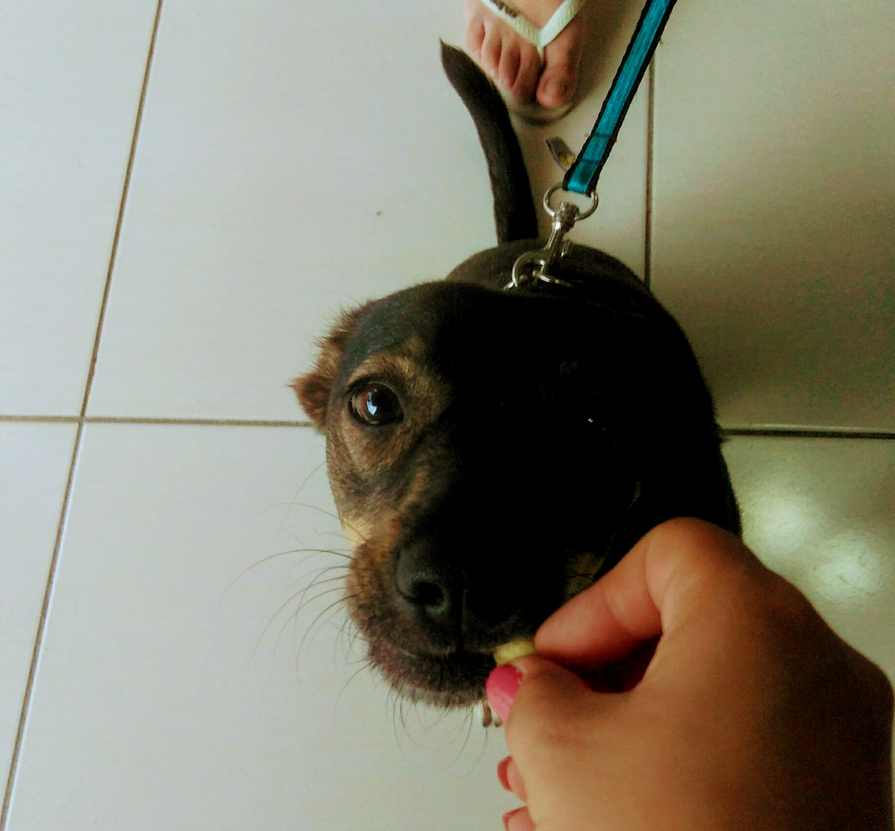
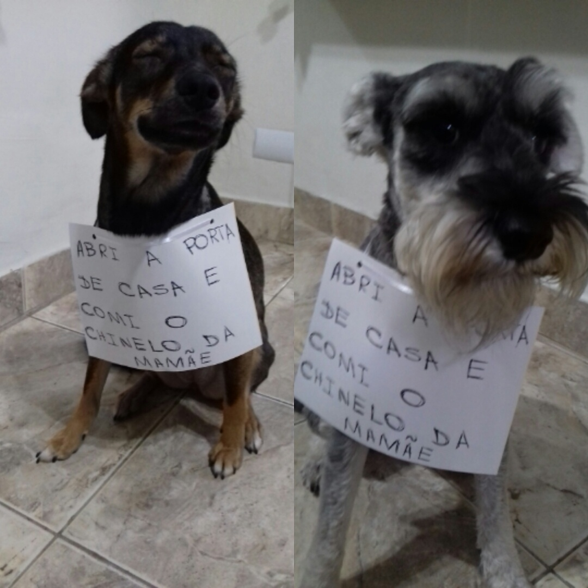
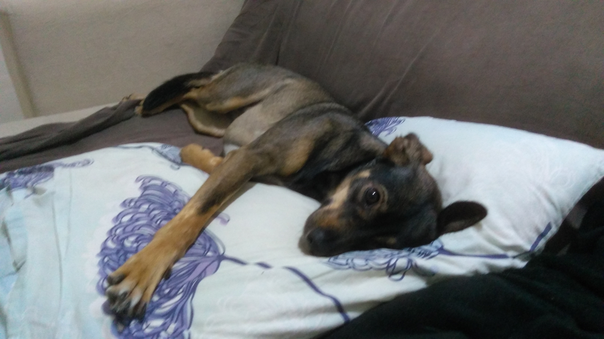

Apresento-lhes Lara, a cachorra da promoção:
|  |  |  |
A Larinha é uma cachorrinha muito especial que entrou na nossa família há alguns anos. Ela veio de uma feira de adoção que aconteceu em um pet center famoso da nossa cidade, onde ela chamou a atenção do Fred, o nosso outro cãozinho que já estava conosco há um tempo.
Ela é uma caramelo, um apelido muito comum na minha região. É extremamente simpática com humanos, mas também muito arteira e esperta. Ela sabe como se safar das suas travessuras com um olhar que podemos chamar de dissimulado (rsrs).
Neste post, vou compartilhar com vocês algumas das histórias mais divertidas e curiosas que a Larinha protagonizou ao longo da sua vida conosco, desde que era filhote até hoje em dia.
Lara e sua alimentação peculiar
A Lara é uma cachorra que come de tudo. Pois é, essa é a minha filhote (não tão filhote hoje em dia). Desde pequena tem um apetite insaciável por coisas que não são comida. Ela não se contentava em roer os sapatos e chinelos da casa, ela também devorou o controle da televisão, as pontas dos móveis, os puxadores do rack e até mesmo as minhas roupas. Eu juro que não sei como ela consegue engolir essas coisas sem se machucar, mas ela sempre sai ilesa das suas aventuras gastronômicas.
Eu já perdi a conta de quantas vezes eu tive que levar ela ao veterinário depois de flagrar ela mastigando algo que não deveria. Uma vez eu cheguei em casa e encontrei ela com a boca cheia de pedaços do meu sapato novo, que eu ainda estava pagando. Eu fiquei tão furiosa que saí correndo atrás dela pela sala, gritando "ainda faltam duas parcelas". Ela achou que era uma brincadeira e começou a correr também, fazendo a maior bagunça. Não achei graça no começo mas depois não consegui conter a risada.
Eu sei que ela não faz por mal, ela só é curiosa e gosta de experimentar coisas novas. Mas eu confesso que às vezes eu fico preocupado com a saúde dela, e também com o meu bolso. Eu já gastei uma fortuna com veterinário, remédios, brinquedos e objetos destruídos. Mas eu não consigo ficar brava com ela por muito tempo, ela é muito carinhosa, mesmo sendo uma cachorra que come de tudo.
Abriu o portal, saiu e o Fred a prendeu pra fora
Você já teve que lidar com cachorros travessos que adoram fazer bagunça? Pois é, eu tenho. Um dia, eu estava batendo um papo com a minha vizinha do outro lado da rua. Totalmente entretida, falando da vida alheia e apenas encostei o portão de ferro da minha casa, que é bem pesado e difícil de abrir.
De repente vi ela na calçada pois a malandrinha conseguiu abrir o portão que estava apenas encostado. Eu fiquei assustada e gritei: "Lara, pra dentro!". Ela ficou atordoada como criança pega aprontando e parou no meio da calçada sem saber se entrava de volta ou se escondia em algum canto.
Nesse momento o Fred, que estava do lado de dentro, não perdeu a chance de fazer uma pegadinha com ela. Ele empurrou o portão com o focinho e o fechou, deixando a Lara presa na rua. A Lara ficou desesperada. Ela tentou abrir o portão de novo, mas não conseguiu. Eu atravessei a rua correndo e abri o portão para ela entrar. Ela entrou correndo fingindo que nada aconteceu.
Desde esse dia, eu sempre tranco o portão quando vou conversar com os vizinhos. Nunca se sabe o que esses dois podem aprontar de novo. Eles são uma dupla dinâmica, uma verdadeira formação de quadrilha canina.
Conclusão
Tenham cachorros!
Eles são uma das partes mais divertidas do meu dia a dia.
Me conte uma peripécia do seu doguinho